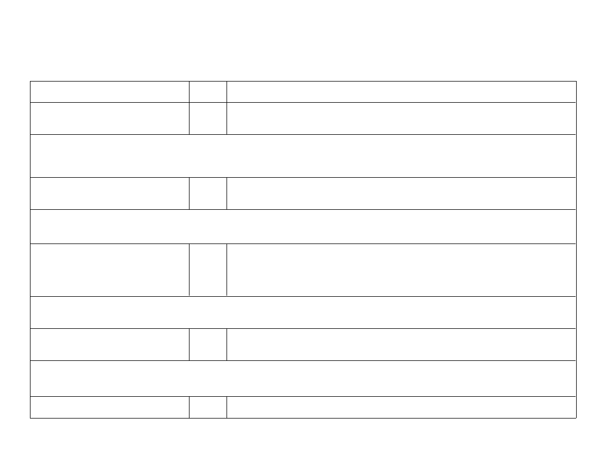

Evaluation Guidelines with indicative exhibits/context to be Observed/Assessed-SAR Tier–II(UGEngineering)
FirstTimeAccreditation
Criterion1: Vision, Missionand ProgramEducationalObjectives (60)
EvaluationGuidelines
Sub Criteria
Marks
1.1. Statethe Visionand Mission of
05
A. Availabilityof theVision &Mission statements of the Department(1)
theDepartment andInstitute
B. Appropriateness/Relevance of theStatements (2)
C. ConsistencyoftheDepartmentstatementswiththeInstitutestatements(2)
(HereInstituteVisionandMissionstatementshavebeenaskedtoensureconsistencywiththede
partmentVisionandMissionstatements;theassessmentoftheInstituteVision and Mission
willbedonein Criterion 10)
Exhibits/Contextto be Observed/Assessed:
A. Vision&Mission Statements B. Correctness from definition perspectiveC. Consistency betweenInstitute and Departmentstatements
1.2. State the
Educational
05
A.Listingof theProgram EducationalObjectives (3 to 5)of
ProgramObjec
theprogramunderconsideration(5)
tives (PEOs)
Exhibits/Contextto beObserved/Assessed:
A. Availability&correctness of the PEOs statements
1.3. IndicatewhereandhowtheVision,Missio
10
A. Adequacyin respect of publication&dissemination(2)
nandPEOsarepublishedanddissemina
B. Process of disseminationamongstakeholders (2)
tedamongstakeholders
C. Extent of awarenessof Vision, Mission &PEOs amongthe stakeholder(6)
Exhibits/Contextto be Observed/Assessed:
A. Adequacy DepartmentVision, MissionandPEOs:
Availability on Institutewebsite underrelevantprogram
link;Availabilityatdepartment noticeboards,
HoD Chamber, department website, if Available;Availability in
departmentleveldocuments/courseofstudy
1
Evaluation Guidelines with indicative exhibits/context to be Observed/Assessed-SAR Tier–II(UGEngineering)
FirstTimeAccreditation
B. Process ofdissemination
Documentaryevidence toindicate the process which ensuresawareness among internal and externalstakeholders with
effectiveprocessimplementation
C. Extent of Awareness
Based on interaction with internal and externalstakeholders
1.4. StatetheprocessfordefiningtheVisionan
25
A.
Description of process involved in definingtheVision, Mission
dMissionoftheDepartment,andPEOs
oftheDepartment (10)
oftheprogram
B.
Description of process involved in definingthe PEOs ofthe program(15)
Exhibits/Contextto be Observed/Assessed:
Documentaryevidence toindicate the process which ensureseffective participation of internal andexternaldepartment stakeholders
witheffective process implementation
1.5. Establish consistencyof
15
A. Preparation ofa matrixof PEOs andelements ofMission statement (5)
PEOswithMission
B. Consistency/justification of co-relationparametersof theabove matrix(10)
oftheDepartment
Exhibits/Contextto be Observed/Assessed:
A. Availability of a matrix having PEOs and Mission elements B. Justification for each of theelements mapped in thematrix
Total:
60
2
Evaluation Guidelines with indicative exhibits/context to be Observed/Assessed-SAR Tier–II(UGEngineering)
FirstTimeAccreditation
Criterion 2: ProgramCurriculumand Teaching–Learning Processes (120)
Sub Criteria
Marks
EvaluationGuidelines
2.1. ProgramCurriculum
20
2.1.1.Statetheprocessusedtoidentify
10
A. Process used to identifyextent of compliance of universitycurriculum
extentofcomplianceoftheUniversity
forattainingPOs &PSOs(6)
curriculumforattainingtheProgramO
B. List the curriculargaps forthe attainment of defined POs &PSOs(4)
utcomes(POs)&ProgramSpecificOu
Note: In caseall POs&PSOs are being demonstrably met through
tcomes(PSOs),mentiontheidentified
curriculargaps, if any
UniversityCurriculum then 2.1.2 will not be applicableand the weightage of
2.1.1 willbe20
Exhibits/Contextto be Observed/Assessed:
A. Documentaryevidencetoindicatetheprocesswhichensuresmapping/complianceofUniversityCurriculumwiththePOs&PSOs;Identifica
tionofgaps;ifany.Effectiveparticipationofinternalandexternaldepartmentstakeholderswitheffectiveprocessimplementation
B. Identified Curricular gaps and itsAppropriateness
2.1.2.Statethedeliverydetailsoftheco
10
A. Steps taken to getidentifiedgapsincluded in the curriculum.(e.g. letter
ntentbeyondthesyllabusforthe
touniversity/BOS) (2)
attainment of POs & PSOs
B. Deliverydetails ofcontent beyond syllabus(5)
C. Mappingofcontent beyond syllabus with the POs&PSOs(3)
Exhibits/Contextto be Observed/Assessed:
A. Documentaryevidence ofsteps taken at regularinterval B. Delivereddetails– documentaryevidence for at least
onesampleperassessmentyear to beverified C. Availability andappropriateness of Mapping table between contents delivered and
Programoutcomes/Program specific outcomes(Courseoutcomes)
3
Evaluation Guidelines with indicative exhibits/context to be Observed/Assessed-SAR Tier–II(UGEngineering)
FirstTimeAccreditation
2.2.
Teaching-
100
Learning Processes
2.2.1.
Describe
the
25
A. Adherence to AcademicCalendar (3)
Processfollowed to
B. Useof various instructionalmethodsandpedagogical initiatives (3)
improve qualityof
C. Methodologies to support weakstudents and encourage bright students(4)
TeachingLearning
D. Qualityofclassroomteaching(Observation in a Class)(3)
E. Conduct of experiments(Observation inLab) (3)
F.
Continuous Assessmentin the laboratory(3)
G. Student feedbackof teachinglearningprocess and actionstaken(6)
Exhibits/Contextto be Observed/Assessed:
A. Availability of AcademicCalendar based on University academiccalendarand its effectivecompliance
B. Documentaryevidence tosupport implementation of pedagogicalinitiatives such as real life examples,
collaborativelearning,ICTsupported learning, interactive classrooms etc.
C. Guidelines to identifyweak and bright students; post identification actionstaken; impactobserved
D. Class room ambience; efforts to keepstudents engaged(also to be verifiedduring interaction with thestudents)
E. Qualityof laboratory experience with respect to conducting, recordingobservations,analysisetc.(also to be verified
duringinteraction with thestudents)
F. InternalSemesterexamination and internalmarksthereof, Practical recordbooks,each experiment assessment, final marks basedon
assessment of all the experiments and other assessments; if any
G. Feedback format, frequency, analysis and actions taken(also to beverified during interaction with students)
2.2.2. Qualityof
20
A. Process for internal semester questionpaper
internalsemesterQuestion
settingandevaluationandeffective processimplementation(5)
papers, Assignments
B. Process to ensurequestions fromoutcomes/learninglevels perspective(5)
andEvaluation
C. Evidence of COscoverage inclass test / mid-term tests(5)
D. QualityofAssignment and its relevance to COs(5)
Exhibits/Contextto be Observed/Assessed:
A. Process of internalsemesterquestionpaper setting, model answers, evaluation and itscompliance
B. Questionpaper validation to ensuredesired standard from outcomeattainmentperspective as well as learninglevelsperspective
C. Mapping of questionswith the Courseoutcomes
D. Assignments to promote self-learning,survey of contents from multiple sources,assignment evaluation and feedback to
thestudents, mapping with theCOs
4
Evaluation Guidelines with indicative exhibits/context to be Observed/Assessed-SAR Tier–II(UGEngineering)
FirstTimeAccreditation
2.2.3. Qualityof studentprojects
25
A. Identification of projectsandallocation methodologyto FacultyMembers(3)
B. Typesandrelevance of the projects and their contribution towardsattainment
ofPOs andPSOs(5)
C. Process formonitoringand evaluation(5)
D. Process to assess individual andteam performance(5)
E. Qualityofcompletedprojects/workingprototypes(5)
F.
Evidences of papers published /Awardsreceivedbyprojectsetc.(2)
Exhibits/Contextto be Observed/Assessed:
A. Projectsidentification and guide allocationProcess
B. Projectsclassification(application,product,research, review etc.) consideration to factors suchas environment,safety,ethics,cost,
standards and mapping with program outcomes and program specificoutcomes
C. Continuous monitoringmechanism andevaluation
D. Methodology(Appropriately documented)to assess individualcontribution/understanding of the project as well as
collectivecontribution/understanding
E. Based on Projectsdemonstration
F. Qualityof place(host)where the paper has beenpublished/qualityof competition in which awardhas beenwon
2.2.4.Initiativesrelatedto
15
A. Industrysupported laboratories(5)
industryinteraction
B. Industryinvolvement in the programdesignand partial deliveryof
anyregularcourses for students(5)
C. Impactanalysis of industryinstitute interaction and actionstakenthereof(5)
Exhibits/Contextto be Observed/Assessed:
A. Type of Industries, Typeof Labs, objectives,utilization andeffectiveness
B. Documentaryevidence
C. Analysis and actionstakenthereof
5
Evaluation Guidelines with indicative exhibits/context to be Observed/Assessed-SAR Tier–II(UGEngineering)
FirstTimeAccreditation
2.2.5.Initiativesrelatedto
15
A. Industrialtraining/tours forstudents(3)
industryinternship/summertr
B. Industrial/internship /summer trainingofmore than two weeksand post
aining
trainingAssessment (4)
C. Impactanalysis of industrial training (4)
D. Student feedback on initiative (4)
Exhibits/Contextto be Observed/Assessed:(Documentary evidencefrom A to D)
A.&B. Typeof Industries, planned or non-planned activity,objectivesclearlydefined, no. of students participated, relevantarea
oftraining, visit report documented
C.&D. Impactanalysis and feedback format, analysis and actionstaken(also to be verified during interaction with students)
Total:
120
6
Evaluation Guidelines with indicative exhibits/context to be Observed/Assessed-SAR Tier–II(UGEngineering)
FirstTimeAccreditation
Criterion3: Course Outcomes andProgram Outcomes (120)
Sub Criteria
Marks
EvaluationGuidelines
3.1. Establish the
20
correlationbetweenthecours
esandthePOs
&PSOs
3.1.1. CourseOutcomes
05
A.
Evidence of COs beingdefined for everycourse(5)
Exhibits/Contextto be Observed/Assessed:
A. Appropriateness of the statements shall be seenfor atleast one courseeach from 2 ,3 and finalyear of study
nd rd
3.1.2.CO-
05
A. Explanation oftableto be ascertained (5)
PO/PSOsmatricesofcoursess
electedin 3.1.1(sixmatrices)
Exhibits/Contextto be Observed/Assessed:
A. Mapping to be verifiedfor atleast two matrices
3.1.3.ProgramlevelCourse-
10
A. Explanation of tables to be ascertained (10)
PO/PSOsmatrixofALLcoursesinclu
dingfirstyear courses
Exhibits/Contextto be Observed/Assessed:
A. Mapping to be verifiedfor atleast one course per year of study;programoutcomes and program specific outcomes getting
mappedwith the corecourses arealso to be verified
7
Evaluation Guidelines with indicative exhibits/context to be Observed/Assessed-SAR Tier–II(UGEngineering)
FirstTimeAccreditation
3.2. Attainment of
50
CourseOutcomes
3.2.1.Describetheassessmentproces
10
A. List of assessmentprocesses (2)
sesusedtogatherthedatauponwhicht
B. Thequality/relevance ofassessmentprocesses& tools used(8)
heevaluationofCourseOutcome is
based
Exhibits/Contextto be Observed/Assessed:
A. &B. Evidence for appropriate assessment processes including data collection,verification,analysis,decisionmaking
3.2.2.RecordtheattainmentofCourse
40
A. Verifytheattainmentlevels as per thebenchmark set forallcourses(40)
Outcomesofallcourseswithrespectto
setattainmentlevels
Exhibits/Contextto be Observed/Assessed:
A. Methodology to defineset levels and its compliance; data collection, verification, analysis and decisionmaking;details for
onecourseper year of study to be verified
3.3.AttainmentofProgramOutco
50
mesandProgramSpecificOut
comes
3.3.1.Describeassessmenttoolsandpr
10
A. List of assessment tools &processes(5)
ocessesusedforassessingtheattainme
B. Thequality/relevance ofassessmenttools/processes used(5)
ntofeachofthePOs
&PSOs
8
Evaluation Guidelines with indicative exhibits/context to be Observed/Assessed-SAR Tier–II(UGEngineering)
FirstTimeAccreditation
Exhibits/Contextto be Observed/Assessed:
A.&B.Direct and indirect assessment tools&processes ;effectivecompliance; direct assessment methodology, indirect
assessmentformats-collection-analysis;decisionmaking based on direct and indirectassessment
3.3.2. Provideresults
40
A. Verification ofdocuments, results and level of attainment of each PO/PSO(24)
ofevaluationof each PO&PSO
B. Overalllevels ofattainment (16marks)
Exhibits/Contextto be Observed/Assessed:
A.&B. Appropriate attainmentlevel and documentary evidences;details for POs&PSOs attainment from corecourses to beverified.Also
atleast two POs&two PSOsattainmentlevels shall be verified
Total
120
9
Evaluation Guidelines with indicative exhibits/context to be Observed/Assessed-SAR Tier–II(UGEngineering)
FirstTimeAccreditation
Criterion4: Students’Performance(150)
Sub Criteria
Marks
EvaluationGuidelines
4.1. Enrolment Ratio (20)
20
A. >= 90%students enrolled at the FirstYearLevelon average basis
duringthepreviousthreeacademicyears startingfrom currentacademicyear(20)
B. >= 80%students enrolled at the First YearLevelon average basis
duringthepreviousthreeacademicyears startingfrom currentacademicyear(18)
C. >= 70%students enrolled at the First YearLevelon average basis
duringthepreviousthreeacademicyears startingfrom currentacademicyear(16)
D. >= 60%students enrolled at the First YearLevelon average basis
duringthepreviousthreeacademicyearsstartingfrom currentacademicyear(14)
E. >= 50%students enrolled at the First YearLevelon average basis
duringthepreviousthreeacademicyears startingfrom currentacademicyear(12)
F.
Otherwise‘0’.
Exhibits/Contextto be Observed/Assessed:
A. B.&C. Data to be verified for each of the assessmentyears
4.2. SuccessRate
inthestipulatedperiodofthe
40
program
4.2.1. Success ratewithout
SI=(Numberofstudents who graduatedfrom theprogram without
backlogsin anySemester/year
backlog)/(Numberofstudents admitted in the firstyear ofthat batchand
ofstudyWithout Backlog
25
actuallyadmitted in 2ndyearvia lateral entryand separate division, if applicable)
means
Average SI=Mean of successindex(SI)for past three
nocompartment
or
batchesSuccessratewithout backlogs in anyyear
failures inanysemester/year ofstudy
Exhibits/Contextto be Observed/Assessed:
ofstudy=25×AverageSI
Data to be verified for each of the assessment years
4.2.2.Successrateinstipulatedperiod(a
SI=(Numberofstudents who graduatedfrom theprogram in the stipulatedperiod
ctualdurationofthe program)
ofcourseduration)/(Number ofstudents admitted in the firstyear of that batch
[Total of
andactuallyadmitted in 2nd year vialateralentryandseparate division, if
withbacklog+withoutbacklog]
15
applicable)Average SI=mean of successindex(SI)for past three batches
Successrate=15 ×Average SI
10
Evaluation Guidelines with indicative exhibits/context to be Observed/Assessed-SAR Tier–II(UGEngineering)
FirstTimeAccreditation
Exhibits/Contextto be Observed/Assessed:
Data to be verified for each of the assessment years
Note:if 100%students clear without any backlogthen also total marksscored will be40 as both 4.2.1&4.2.2 will be
applicablesimultaneously.
4.3. Academic Performance
15
Academic Performance=1.5 *Average API(Academic PerformanceIndex)
inThird Year
API = ((Mean of 3 YearGrade Point Average of allsuccessful Students on a10point
rd
scale)or (Mean of the percentage ofmarks of allsuccessfulstudentsin
ThirdYear/10)) x(successful students/numberof students appeared in the
examination)Successfulstudents arethose who are permittedtoproceed to
Exhibits/Contextto be Observed/Assessed:
thefinalyear
Data to be verified for atleast oneof theassessment years
4.4. Academic Performance
15
Academic PerformanceLevel = 1.5 * AverageAPI(Academic
inSecondYear
PerformanceIndex) API = ((Mean of 2 YearGrade Point Average ofallsuccessful
nd
Students on a10point scale)or (Mean of the percentage ofmarks of
allsuccessfulstudentsinSecondYear/10)) x(successful students/numberof students
appeared in the examination)Successfulstudents arethose who are
Exhibits/Contextto be Observed/Assessed:
permittedtoproceed to theThirdyear
Data to be verified for atleast oneof theassessment years
4.5. Placement,Higherstudies
40
Assessment Points =40 × average ofthreeyears of[(x+y+z)/N] where,x=Number
andEntrepreneurship
ofstudents placed in companies orGovernment sectorthrough on/off
campusrecruitment
y=Number ofstudents admittedto higher studieswith valid qualifyingscores (GATEor
equivalent Stateor National leveltests, GRE, GMATetc.)
z=No. ofstudents turned entrepreneur in engineering/technologyN
=Totalnumber of finalyearstudents
Exhibits/Contextto beObserved/Assessed:
Data to be verified for atleast oneof theassessment years
11

Evaluation Guidelines with indicative exhibits/context to be Observed/Assessed-SAR Tier–II(UGEngineering)
FirstTimeAccreditation
4.6. Professional Activities
20
4.6.1.Professionalsocieties/chaptersa
05
A. Availability&activitiesof professionalsocieties/chapters(3)
ndorganizingengineeringevents
B. Number, qualityofengineeringevents
(organizedatinstitute)(2)(Level -
Exhibits/Contextto be Observed/Assessed:
Institute/State/National/International)
Self-Explanatory
4.6.2. Publication of
05
A. Quality&Relevance of thecontentsand Print Material(3)
technicalmagazines,newslett
B. Participation ofStudents from the program (2)
ers, etc.
Exhibits/Contextto be Observed/Assessed:
A. Documentaryevidence
B. Documentaryevidence -Students participation (also to be confirmed during interaction with thestudents)
4.6.3.Participationininter-
10
A. Events within the state(2)
instituteeventsbystudentsoftheprogra
B. Events outsidethe state(3)
mofstudy (atotherinstitutions)
C. Prizes/awardsreceived insuch events(5)
Exhibits/Contextto be Observed/Assessed:
A.B.&C. Qualityof events and documentaryevidence
Total:
150
12
Evaluation Guidelines with indicative exhibits/context to be Observed/Assessed-SAR Tier–II(UGEngineering)
FirstTimeAccreditation
Criterion5:FacultyInformationand Contributions(200)
Sub Criteria
Marks
EvaluationGuidelines
5.1. Student-Faculty Ratio (SFR)
20
Markstobegivenproportionallyfromamaximumof20toaminimumof10foraverageSFRbetween15:1to25:
1,andzeroforaverageSFRhigherthan25:1.Marksdistributionisgivenasbelow:
<=15- 20Marks
<=17- 18Marks
<=19- 16Marks
<=21- 14Marks
<=23- 12Marks
<=25- 10Marks
>25-
0Marks
Exhibits/Contextto be Observed/Assessed:
SFR is to be verified considering thefaculty of the entiredepartment.
No. of Regular faculty calculationconsidering Regularfaculty definition*; Faculty appointment letters, timetable,subject allocationfile,
salarystatements.
No. of students calculation as mentioned in the SAR(pleaserefer tableunder criterion5.1)
Faculty Qualification as per AICTE guidelines shall only becounted
*Note: All thefaculty whether regular orcontractual (except Part-Time),will be considered. Thecontractual faculty(doingaway
withtheterminologyofvisiting/adjunctfaculty,whatsoever)whohavetaughtfor2consecutivesemestersinthecorrespondingacademicyearonfu
lltimebasisshallbeconsideredforthepurposeofcalculationintheFacultyStudentRatio.However,followingwillbeensured
in
caseof
contractual faculty:
1. Shall have the AICTEprescribedqualifications and experience.
2. Shallbeappointedonfulltimebasisandworkedforconsecutivetwosemestersduringtheparticularacademicyearunderconsideration.
3. Shouldhavegonethroughanappropriateprocessofselectionandtherecordsofthesameshallbemadeavailabletothevisiting teamduring
NBAvisit.
13
Evaluation Guidelines with indicative exhibits/context to be Observed/Assessed-SAR Tier–II(UGEngineering)
FirstTimeAccreditation
5.2. Faculty CadreProportion
25
Cadre ProportionMarks=
AF1 +
AF2x0.6
+ AF3x0.4
x12.5RF1
RF2
RF3
25(Refercalculation in SAR)
Exhibits/Contextto be Observed/Assessed:
(Faculty Qualification andexperience required forcadre posts shall onlybe considered as per AICTE norms/guidelines)
Cadrewise No. of facultyavailable;Faculty qualification and experience and eligibility;Appointment/Promotionorders
Cadrewise no. of faculty required as per AICTE guidelines (refer calculation inSAR)
5.3. FacultyQualification
25
FQ =2.5 x[{10X +4Y}/F]where
X is no. of facultywith Ph.D., Yis no. of facultywith M.Tech, Fis no.
offacultyrequired to comply1:20FacultyStudent ratio
(no. of facultyand no. ofstudents required to becalculatedas per 5.1)
Exhibits/Contextto be Observed/Assessed:
Documentaryevidence –FacultyQualification
5.4 Faculty Retention
25
A. 90%ofrequiredFacultiesretained duringtheperiodof assessment keepingCAY m2
asbaseyear (25)
B. 75%of requiredFacultiesretained duringtheperiod of assessment keepingCAY m2 as
baseyear(20)
C. 60%of requiredFacultiesretained duringtheperiod of assessment keepingCAY m2 as
baseyear(15)
D. 50%of requiredFacultiesretained duringtheperiod of assessment keepingCAY m2 as
baseyear(10)
E. Otherwise(0)
14
Evaluation Guidelines with indicative exhibits/context to be Observed/Assessed-SAR Tier–II(UGEngineering)
FirstTimeAccreditation
Exhibits/Contextto be Observed/Assessed:
Facultydateof joining;atleastthree month (July-April-May) salarystatement for each of the assessmentyears
5.5. Innovationsby the Faculty
20
A. Thework must be madeavailable onInstitute Website (4)
inTeaching andLearning
B. Thework must be available for peer review andcritique(4)
C. Thework must be reproducible and developed furtherbyotherscholars(2)
D. Statement of cleargoals,use ofappropriate methods, significance
ofresults,effectivepresentation and reflective critique(10)
Exhibits/Contextto be Observed/Assessed:
A. AvailabilityonInstitute website;awarenessamongfacultyandstudents ofthedepartment
B. &C. Self-explanatory
D.Innovationsthat contributeto the improvement ofstudent learning, typicallyinclude useofICT,instructiondelivery,
instructionalmethods, assessment, evaluation etc.
5.6 Faculty as participants
15
For eachyear:Assessment = 3×Sum/0.5RF
in Faculty development
Average assessment overlast threeyears startingfrom CAYm1 (Markslimited to 15)
/trainingactivities/STTP
s Exhibits/Contextto be Observed/Assessed:
Relevance of thetraining/developmentprogramme
No. ofdays; No. of faculty
5.7. Research and Development
30
5.7.1. Academic Research
10
A. Number ofqualitypublications in
refereed/SCIJournals,citations,Books/BookChaptersetc. (6)
B. PhD guided /PhD awardedduringtheassessmentperiodwhile workingin
theinstitute (4)
Exhibits/Contextto be Observed/Assessed:
A. Qualityof publications; publicationscopy
B. Documentaryevidence
15
Evaluation Guidelines with indicative exhibits/context to be Observed/Assessed-SAR Tier–II(UGEngineering)
FirstTimeAccreditation
5.7.2 Sponsored Research
05
Fundedresearch from outside; Cumulative duringCAYm1,CAYm2and
CAYm3Amount >
20Lakh
Amount >=16Lakh and<= 20Lakh– 4
MarksAmount >=12Lakh and<16Lakh– 3
MarksAmount >= 8
Lakhand<12Lakh–
2MarksAmount >= 4
Lakhand<
8Lakh –1 MarkAmount <4 Lakh
Exhibits/Contextto beObserved/Assessed:
Documentaryevidence;Funding agency, Amount, Duration, Research progress;Outcome
5.7.3 Development Activities
10
A. ProductDevelopment
B. Researchlaboratories
C. Instructionalmaterials
D. Workingmodels/charts/monogramsetc.
Exhibits/Context to be Observed/Assessed:
Selfexplanatory
5.7.4. Consultancy(FromIndustry)
05
Consultancy; (Cumulative duringCAYm1, CAYm2 and
CAYm3)Amount >10Lakh
Amount >=8Lakh and <=10Lakh– 4
MarksAmount >=6 Lakhand<
8Lakh –3
MarksAmount >= 4Lakhand<
6Lakh –2
MarksAmount >=2Lakhand<
4Lakh –1
MarkAmount <2Lakh
Exhibits/Contextto be Observed/Assessed:
Documentaryevidence;Funding agency, Amount, Duration, Research progress;Outcome
5.8.Faculty
30
A. A well-definedperformance appraisaland development systeminstituted forall
Performance
theassessmentyears (10)
Appraisal
B. Itsimplementationandeffectiveness(20)
andDevelopmentSystem(FP
16
Evaluation Guidelines with indicative exhibits/context to be Observed/Assessed-SAR Tier–II(UGEngineering)
FirstTimeAccreditation
Exhibits/Contextto be Observed/Assessed:
A. Notifiedperformance appraisal and developmentsystem;Appraisal Parameters; Awareness
B. Implementation,Transparency and Effectiveness
5.9.
10
Provision of Visiting/Adjunct/Emeritus facultyetc.(1)
Visiting/Adjunct/Emeritus
Minimum 50 hours
Facultyetc.
peryearinteraction(peryear to obtain
Exhibits/Contextto be Observed/Assessed:
threemarks : 3 x3 =9)
Documentaryevidence
Total:
200
Criterion6:Facilities andTechnicalSupport(80)
Sub Criteria
Marks
EvaluationGuidelines
6.1.Adequateand well
30
A. Adequatewell-equippedlaboratories to runall the program-specificcurriculum(20)
equipped laboratories, and
B. Availabilityof adequatetechnical supportingstaff(5)
technicalmanp
C. Availabilityof qualifiedtechnical supportingstaff(5)
Exhibits/Contextto be Observed/Assessed:
ower
A. Adequacy;well-equippedlaboratories; utilization
B. &C.Self-explanatory
6.2.AdditionalFacilitiescreatedfor
25
A. Availabilityand relevanceof additionalfacilities(10)
improvingthequalityoflearning
B. Facilities utilization andeffectiveness(10)
experience
C. Relevance to POs and PSOs(5)
inLaboratories
Exhibits/Contextto be Observed/Assessed:
Self-explanatory
17
Evaluation Guidelines with indicative exhibits/context to be Observed/Assessed-SAR Tier–II(UGEngineering)
FirstTimeAccreditation
6.3. Laboratories:
10
Maintenanceandoverallambience (10)
Maintenanceand
Exhibits/Contextto be Observed/Assessed:
overallambience
Self-explanatory
6.4. Projectlaboratory
05
Facilities&Utilization (5)
Exhibits/Contextto be Observed/Assessed:
Self-explanatory
6.5. Safety measures
10
Safetymeasures in laboratories (10)
inlaboratories
Exhibits/Contextto be Observed/Assessed:
Self-explanatory
Total:
80
18

Evaluation Guidelines with indicative exhibits/context to be Observed/Assessed-SAR Tier–II(UGEngineering)
FirstTimeAccreditation
Criterion7: ContinuousImprovement (50)
Sub Criteria
Marks
EvaluationGuidelines
7.1.Actionstakenbasedontheresultsofeval
20
A. Documentation ofPOs and PSOs attainmentlevels(5)
uationofeachofthePOsandPSOs
B. Identification ofgaps/shortfalls(5)
C. Plan ofaction to bridgethe gapand itsImplementation(10)
Exhibits/Contextto be Observed/Assessed:
Documentaryevidence inrespect of each of thePOs
7.2 AcademicAudit
10
A. Assessmentshall bebased on conduct and actions taken in relation to
andactionstakenduringthe period
continuousimprovement(10)
ofAssessment
Exhibits/Contextto beObserved/Assessed:
A. Academic Audit assessment criteria,frequency,conductmechanism,action plan based on audit, implementation and effectiveness
7.3.Improvement in Placement,
10
Assessment is based on improvementin: (Referplacement index4.5)
Higher Studies andEntrepreneurship
A. Improvement in Placementnumbers,quality, core hiringindustryandpaypackages(5)
B. Improvement in HigherStudies admissions forpursuingPhD. in premierinstitutions(3)
C. Improvement in numberof Entrepreneurs(2)
(Marks to begiven proportionatelyconsideringnos. in the baseyear CAY m 3)
Exhibits/Contextto be Observed/Assessed:
A. B.&C. Nos. in each year of the assessment;improvement considering CAYm3 as a base year
7.4.Improvement in
10
A. Assessment is basedonimprovement in terms of ranks/score in
thequalityofstudents admitted to
qualifyingstatelevel/nationallevel entrances tests, percentage Physics, Chemistryand
the program
Mathematicsmarks in 12th Standard and percentage marks ofthe
Exhibits/Contextto be Observed/Assessed:
lateralentrystudents
A. Documentaryevidence – list of students admitted; admission authorityguidelines; ranks/scores;comparative status considering CAYm3 as
abase year
Total:
50
19
Evaluation Guidelines with indicative exhibits/context to be Observed/Assessed-SAR Tier–II(UGEngineering)
FirstTimeAccreditation
Criterion8:FirstYearAcademics (50)
Sub Criteria
Marks
EvaluationGuidelines
8.1. FirstYear Student- Faculty
05
For eachyear of assessment = (5 ×20)/ FYSFR
Ratio(FYSFR)
(Limited to Max. 5) Average of Assessment of datain CAY, CAY m 1 andCAY m 2
*Note: IfFYSFR is greater than 25, then assessment equal to zero.
Exhibits/Contextto be Observed/Assessed:
No. of Regular faculty calculationconsidering Regular faculty definitionandfractional load; Faculty appointmentletters; Salarystatements
No. of studentscalculation as mentioned in the SAR
8.2.
05
A. Assessment of facultyqualification(5x+3y)/RF
QualificationofFacultyTeachingFi
B. Average of Assessmentofprevious threeacademicyears including
rstYearCommonCourses
currentacademicyear.(Refer 8.2.forx,yandRF)
Exhibits/Contextto be Observed/Assessed:
Documentaryevidence –FacultyQualification
8.3. FirstYear Academic Performance
10
Academic Performance=((Meanof 1st Year GradePoint Average ofallsuccessful Students on
a10point scale)or (Mean of the percentage ofmarksinFirst Year ofall successful
students/10))x(successful students/numberof studentsappearedin the examination)
(Successfulstudents arethosewho are permittedtoproceed to theSecondyear)
Exhibits/Contextto be Observed/Assessed:
Data to be verified for atleast oneof theassessment years
8.4. Attainment of
10
CourseOutcomesoffirst year
courses
20
Evaluation Guidelines with indicative exhibits/context to be Observed/Assessed-SAR Tier–II(UGEngineering)
FirstTimeAccreditation
8.4.1. Describetheassessment
05
A. List of assessmentprocesses (1)
processesusedto gather thedata
B. Therelevance of assessment tools used(4)
upon whichthe evaluation of
CourseOutcomes of firstyear
Exhibits/Contextto be Observed/Assessed:
isbased
A.&B. Direct and indirectassessment(ifapplicable), tools&processes;effective compliance; direct
assessmentmethodology,indirectassessmentformats-collection-analysis;decisionmaking
8.4.2. Record the attainment of
05
A. Verifytherecordsasper thebenchmark setfor thecourses (5)
CourseOutcomes of
allfirstyearcourses
Exhibits/Contextto be Observed/Assessed:
A. Documentaryevidence –Attainment for atleast 3courses
8.5. Attainment of
20
ProgramOutcomes ofall first
8.5.1.Indicateresults of
year courses
15
A. Process ofcomputingPOs/PSOs attainmentlevelfrom theCOs of relatedfirstyearcourses(5)
evaluationofeachrelevantPO/PS
B. Verification ofdocuments validatingthe above process(10)
O
Exhibits/Contextto be Observed/Assessed:
A.&B. Documentaryevidence for each relevant PO/PSO
8.5.2. Actionstaken based on the
05
A. Appropriateactions taken (5)
resultsof evaluation of relevant
POs
Exhibits/Contextto be Observed/Assessed:
/PSOs
A. Documentaryevidencefor eachrelevant PO/PSO
Total:
50
21
Evaluation Guidelines with indicative exhibits/context to be Observed/Assessed-SAR Tier–II(UGEngineering)
FirstTimeAccreditation
Criterion9: Student SupportSystems(50)
Sub Criteria
Marks
EvaluationGuidelines
9.1. Mentoring systemto
05
A. Details of thementoringsystemthat has beendeveloped for thestudents
helpatindividuallevel
forvariouspurposes and also statetheefficacyofsuchsystem(5)
Exhibits/Contextto be Observed/Assessed:
A. Mentoringsystem terms of reference; implementation; effectiveness(also to be verified during interaction with thestudents)
9.2. Feedback analysisand reward
10
A. Methodologybeingfollowed for analysis of feedbackand its effectiveness (5)
/correctivemeasures taken, ifany
B. Record of corrective measurestaken (5)
Exhibits/Contextto be Observed/Assessed:
A. Feedback questions,collectionprocess,analysis,actionstaken,effectiveness
9.3. Feedback on facilities
05
A. Feedbackcollection,analysisandcorrective action (5)
Exhibits/Contextto be Observed/Assessed:
Selfexplanatory
9.4. SelfLearning
05
A. Scope for self-learning(2)
B. Theinstitution needs to specifythe
facilities,materialsforlearningbeyondsyllabus,Webinars,Podcast,MOOCsetc.anddem
Exhibits/Contextto be Observed/Assessed:
onstrate its effective utilization(3)
Selfexplanatory
9.5. CareerGuidance,
10
A. Availabilityof careerguidance facilities(2)
Training,Placement
B. Counselingfor higher studies (GATE/GRE, GMAT, etc.)(2)
C. Pre-placement training(3)
22
Evaluation Guidelines with indicative exhibits/context to be Observed/Assessed-SAR Tier–II(UGEngineering)
FirstTimeAccreditation
D. Placementprocess andsupport (3)
Exhibits/Contextto be Observed/Assessed:
Availability,implementation,effectiveness(also tobeverified during interaction with thestudents)
9.6. EntrepreneurshipCell
05
A. Entrepreneurship initiatives(1)
B. Data on students benefitted(4)
Exhibits/Contextto be Observed/Assessed:
Availability,implementation,effectiveness(also tobe verifiedduring interaction with the students)
9.7. Co-curricular andExtra-
10
A. Availabilityof sports andculturalfacilities(3)
curricular Activities
B. NCC, NSSand otherclubs(3)
C. Annualstudentsactivities (4)
Availability,implementation,effectiveness(alsotobe verified during interaction with thestudents)
Total:
50
23
Evaluation Guidelines with indicative exhibits/context to be Observed/Assessed-SAR Tier–II(UGEngineering)
FirstTimeAccreditation
Criterion10:Governance,InstitutionalSupport and FinancialResources (120)
Sub Criteria
Marks
EvaluationGuidelines
10.1. Organization,Governance
40
andTransparency
10.1.1.Statethe Visionand Mission
05
A. Availabilityof theVision &Mission statements of theInstitute(2)
oftheInstitute
B. Appropriateness/Relevance of theStatements (3)
Exhibits/Contextto be Observed/Assessed:
A. InstituteVisionandMissionstatements: AvailabilityofstatementsonInstitutewebsite;AvailabilityatCentralfacilitiessuchasLibrary,ComputerCenter,Pri
ncipalChamberetc.Availabilityofonesetofstatementsineachofthedepartments;AvailabilityinInstituteleveldocuments
B. Correctness from definitionperspective
10.1.2.
10
A. List the GoverningBodyComposition,senate,andall otheracademic
Governingbody,administratives
andadministrativebodies; theirmemberships,functions,and responsibilities; frequencyof
etup,functions of variousbodies,
the meetings;participationdetails of externalmembersandattendance therein(4)
servicerulesprocedures,recruitm
B. Thepublished service rules, policies and procedures withyear of publication(3)
entandpromotionalpolicies.
C. Minutes ofthe meetingsandaction-taken reports (3)
Exhibits/Contextto be Observed/Assessed:
Selfexplanatory
10.1.3. Decentralization in
10
A. List the names of thefacultymemberswho havebeendelegated powers for
workingandgrievance
takingadministrative decisions(1)
redressalmechanism
B. Specifythe mechanism and composition of grievance redressalcell (2)
C. Actiontaken report as per ‘B’ above(7)
Exhibits/Contextto be Observed/Assessed:
A. B.&C. Documentaryevidence
24

Evaluation Guidelines with indicative exhibits/context to be Observed/Assessed-SAR Tier–II(UGEngineering)
FirstTimeAccreditation
10.1.4. Delegation of financial powers
10
A. Financial powers delegated to the Principal,Heads of Departments and relevantin-charges(3)
B. Demonstrate theutilization of financial powers for eachof theassessmentyears(7)
Exhibits/Contextto be Observed/Assessed:
A. Circulars notifyingfinancialpowers
B. Documentaryevidence toexhibit utilization at eachlevels during assessmentyears
10.1.5.Transparencyandavailabilityo
05
A. Information on thepolicies, rules,processes is to bemadeavailable on web site(2)
f
B. Dissemination of the information about student, facultyand staff(3)
correct/unambiguousinformati
Exhibits/Contextto be Observed/Assessed:
on in publicdomain
A.&B.Website and Documentaryevidence
10.2.BudgetAllocation,Utilization,a
30
nd Public
AccountingatInstitutelevel
10.2.1. AdequacyofBudgetallocation
10
A. Quantum of budget allocation forthreeyears(5)
B. Justification of budgetallocated for threeyears(5)
Exhibits/Context to be Observed/Assessed:
A. Budget formulation, finalization and approvalprocess
B. Requirement – allocation–adequacy – justificationthereof
10.2.2. Utilization of allocatedfunds
15
A. Budget utilization forthreeyears(15)
Exhibits/Contextto beObserved/Assessed:
A. Balance sheet; effectiveutilization; randomverificationforatleast twoofthe threeassessmentyears
10.2.3. Availabilityof the
05
A. Availabilityof Auditedstatements on website(5)
auditedstatements on the
institute’swebsite
25
Evaluation Guidelines with indicative exhibits/context to be Observed/Assessed-SAR Tier–II(UGEngineering)
FirstTimeAccreditation
Exhibits/Contextto be Observed/Assessed:
A.Website
10.3.
30
To be evaluated inconsultationwith the ProgramExperts
ProgramSpecificBudget
Allocation,Utilization
10.3.1. Adequacyofbudgetallocation
10
A. Quantum of budgetallocationforthreeyears(5)
B. Justification of budgetallocated for threeyears(5)
Exhibits/Contextto be Observed/Assessed:
A. Budget formulation, finalization and approvalprocess
B. Requirement – allocation–adequacy – justificationthereof
10.3.2. Utilization of allocatedfunds
20
A. Budget utilization forthreeyears(20)
Exhibits/Contextto be Observed/Assessed:
A. Balance sheet; effective utilization; random verification for atleasttwo of thethreeassessment years
10.4. Library andInternet
20
10.4.1. Qualityof
Availabilityof relevant learningresources includinge-resourcesandDigitalLibrary(7)
learningresources(hard/soft)
10
Accessibilityto students(3)
Exhibits/Contextto be Observed/Assessed:
Availability;Adequacy;Effectiveness
(Also to beverified during interactions with the faculty and students)
26
Evaluation Guidelines with indicative exhibits/context to be Observed/Assessed-SAR Tier–II(UGEngineering)
FirstTimeAccreditation
10.4.2.Internet
10
A. Availablebandwidth(4)
B. Wi Fi availability(2)
C. Internet access in labs, classrooms, libraryand offices of allDepartments (2)
D. Securitymechanism(2)
Exhibits/Contextto be Observed/Assessed:
Availability as per AICTE norms; Adequacy;Effectiveness
(Also to beverified during interactions with the faculty and students)
Total:
120
27